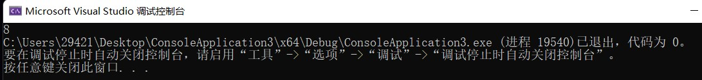
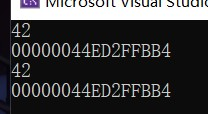
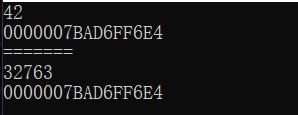
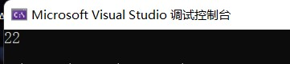
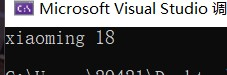

C++面向对象编程（一）
前言
欢迎，各位来到C++面向对象编程的学习，相信各位已经学习过C语言，已经进入到了程序的世界，本课程要求一些c++的基础知识，比如控制流程，循环，指针，引用等等概念，如果清楚可以B站搜索黑马程序员的C++课程，本系列基于侯捷老师的C++课程，为大家讲解C++面向对象的一些知识，同时规范一下程序的书写，事不宜迟，我们马上开始！
面向过程？面向对象？
相信各位，在学习C的过程中，一定已经动手写了很多程序了，我们通过写各种函数然后分析事物的指令步骤，依次调用相应的函数去解决问题，这样的操作有一个专有名词叫做面向过程编程，而面向对象编程，从过程中跳出来，将问题处理成转变成一个一个对象，通过对象去做一个行为进而解决问题。可能有的小伙伴还是有点晕，没关系我们举一个例子，写一个五子棋程序：
面向过程的设计思路就是首先分析问题的步骤：
1、开始游戏，2、黑子先走，3、绘制画面，4、判断输赢，5、轮到白子，6、绘制画面，7、判断输赢，8、返回步骤2，9、输出最后结果。
面向对象的设计则是从事件中各个角色的行为出发来解决问题。
整个五子棋可以分为1、黑白双方，这两方的行为是一模一样的，2、棋盘系统，负责绘制画面，3、规则系统，负责判定诸如犯规、输赢等。他们只需要执行自己的行为就可以解决问题。
可以明显地看出，面向对象是以功能来划分问题，而不是步骤。
当然我们并不是说面向对象优于面向过程，只是在不同的场合我们选择最为合适的设计。面向过程的性能比较高，面向对象的维护性，复用性，扩展性强。我们要根据场合有选择的使用。
C++代码的基本形式
我们在编写代码的时候，建议分文件编写代码，这样的将各个功能模块化可以大大的方便代码的维护、扩展等等。
我们通常会将我们的类声明写在一个头文件中，其余实现写在另一个cpp中，当我们需要这个类的时候，我们只需要在主文件中使用#include即可使用我们写好的类。我们在编写一个头文件的时候，要记得写防御式声明，这样可以有效地避免头文件被多次引用的问题。防御式声明的语法如下：
1 |
|
面向对象——类
在学会面向对象之前，我们要先知道什么是类，可能有的小伙伴会疑问类是什么？为什么面向对象编程要知道类？其实类和对象的关系密不可分，我们举一个例子，这天下的每一个人都是一个对象，我们有各自的名字，各自的性别等等属性，我们也都可以吃饭，可以学习等等，这个被叫做行为(方法)，所以我们将所有人抽象成人类，人类有名字，有性别这些属性，也有吃饭，学习这些行为。所以类就是我们根据实际抽象出来的拥有属性和行为的一个整体，而对象就是由类产出的个例。这就引出了面向对象的第一大特征：“抽象”。我们要学习如何抽象出一个类。类的基本语法如下：
1 | class classname //这被称为class head |
我们可以在类内完成函数的实现，也可以在类内声明，类外实现。声明好类以后我们就可以像使用其他基本数据类型一样声明一个对象了。
inline 内联函数
如果你看过从0开始的汇编语言系列，那么你应该知道函数调用的一个过程是什么样子的，实际上函数调用是main函数将CPU的控制权转交给函数，自己停止运行，待函数运行完成将CPU的控制权返回给main函数后，main继续运行。如果函数内容很多，那么这样的转交带来的时间占用可以忽略，但如果函数内容不多，那么程序运行的大部分时间都将被这种转交的过程所占用，所以为了消除函数调用的时空开销，C++ 提供一种提高效率的方法，即在编译时将函数调用处用函数体替换。这种在函数调用处直接嵌入函数体的函数称为内联函数。实际上类内完成实现的函数都是内联函数，而类外完成的函数不是内敛函数。当然一个函数到最后是否会成为inline函数，我们是不得而知的，我们只能在函数的定义前面加上inline关键字，建议编译器将这个函数当做inline函数，至于是否真的会被当做inline函数，编译器要结合程序的复杂程度来确认。
访问级别
可能有的小伙伴已经注意到了，在类的声明中，我们使用了两个关键字public和private，这两个关键字的意思是公有和私有，公有代表可以在任何地方被访问到。私有表示只能在类内被访问。其实还有一种级别叫做protected，我们有序再来研究。
我们一般将类中数据部分放在private下，这就引出了我们面向对象程序设计的第二大特征：“封装”，即隐藏对象的属性和实现细节，仅对外公开接口，控制在程序中属性的读和修改的访问级别，就像是电视遥控器，我们只需要知道按下音量up键可以使声音变大就好，不需要知道按下按键后到底发生了什么使得音量变大。
我们在程序设计中要秉承着封装的原则，比如我们将数据放到private下禁止外界随意访问，当外界需要访问或者修改的时候，我们可以对外提供get和set接口。
构造函数
不知道小伙伴有没有注意到，在上面类的格式中，我们有一个函数很特别它的名字和类名相同，但是没有返回值类型，这个函数会在我们声明一个对象的时候自动调用，这个函数叫做构造函数。
我们看一个例子：
1 | classname(type a=0,type b=0……):属性1(a)，属性2(b)……{} |
构造函数有参数，我们可以在参数列表中对这些参数赋值让这些参数变成默认实参，默认实参的意思是当我们声明一个对象的时候，如果我们没有指定对象的属性值，那么就使用默认实参，我们可以看到后面的属性1(a)，这就代表了将a的值赋给属性1，如果我们没有指定a的值，那默认a为0，赋值给属性1，当然这种特殊的语法是构造函数独享的。我们在编写构造函数的时候，要注意将属性初始化。
重载函数
当我们在写成员的行为的时候，我们希望一个行为可以对不同的事情做出不同应对，比如我们吃冰淇淋希望是用勺子挖着吃，吃饺子用筷子夹着吃等等。这个时候我们可以写多个函数比如EatIcecream()，EatDumpings()。但这样有一点麻烦，我们可以通过重载函数的方式解决，重载函数通常用来命名一组功能相似的函数，这样做减少了函数名的数量，避免了名字空间的污染，对于程序的可读性有很大的好处。重载函数要求函数名必须相同，但这些同名函数的指参数的个数、类型或者顺序至少有一个不同。
几乎所有函数都可以重载，包括构造函数，就比如我们之前写的那条构造函数，我们可以将它重载为：
1 | classname():属性1(0)，属性2(0)……{} |
这条代码表示，当我们声明一个对象时不可以指定属性，属性默认为0。编译器会根据我们声明对象的代码决定到底使用哪一个构造函数。
将构造函数放在private下
我们要考虑一个问题，我们之前说过private下的无论是属性还是行为都不可以被外界随意访问，但如果我们将构造函数放在了private下呢？我们还可以正常的声明一个对象吗？显然，这是不行的，当我们声明一个对象的时候我们就需要调用构造函数而构造函数被放在了private下不能被访问，那么也就无法创建对象。但这样做有什么意义吗？当然有，这在设计模式中被称为单例模式。比如：
1 | class A |
这就是一个经典的单例模式的例子，我们不允许外界声明处一个A类型的对象，我们在getInstance函数中声明一个A类型的对象并将它返回，当我们外界需要使用类A中的setup函数的时候我们可以这样调用：
1 | A::getInstance().setup(); |
我们通过A作用域下的getInstance获得A类对象，然后使用setup函数。
那么为什么要使用单例模式呢？
首先单例模式节省公共资源，如果大家都要喝水，但是没必要每人家里都打一口井是吧，通常的做法是整个村里打一个井就够了，大家都从这个井里面打水喝。对应到我们计算机里面，像日志管理、打印机、数据库连接池、应用配置这一类事情都会使用单例模式。其次是单例模式方便控制就像日志管理，如果多个人同时来写日志，你一笔我一笔那整个日志文件都乱七八糟，如果想要控制日志的正确性，那么必须要对关键的代码进行上锁，只能一个一个按照顺序来写，而单例模式只有一个人来向日志里写入信息方便控制，避免了这种多人干扰的问题出现。
常量成员函数
我们回过头看我们类声明那一部分的代码， 有一个函数后面有const标记，这代表着我这个函数将不会改变任何值，可能有人认为这种东西真的有必要吗？答案是肯定的，当我们在声明一个const的对象的时候，我们规定这个对象的属性不可以被更改，但如果我们调用了一个没有const标记的函数，无论我们这个函数是否修改了属性，编译器都会认为这个函数可能修改属性，这是不被允许的。
1 |
|
比如这样的代码将会产生这样的错误：
只要我们在getage()后面加上const就不会再报这样的错误了。
传值VS传引用
C++的函数参数传递方式，可以是传值方式，也可以是传引用方式。传值的本质是：形参是实参的一份复制。传引用的本质是：将我们要传的值所在的地址传输过去。
当我们要传递一个很大的参数的时候，显然我们先复制再赋值最后再销毁的操作会浪费很多性能，这个时候传递引用显然更为合适。因为传递引用一次只是传输了四个字节。所以我们建议传递参数和返回一个参数的时候，我们多传引用，而不是传值。如果我们是追求速度，不希望我们传递的值被改变，我们可以为引用加上const加以约束。
友元函数
在类的声明部分还有一个特殊的关键字值得我们关注，那就是friend，朋友，我们看这个函数直观的感觉它想表达的意思这个函数是这个类的friend，那么C++中的friend可以做什么呢？C++中的friend翻译过来叫做友元，被标记为友元的函数可以直接获取类中的属性。但这样做就打破了我们封装的原则，所以我们在写外部函数访问成员属性的时候，还是尽量的使用类内函数获取。
相同class的各个objects互为友元
我们修改之前的代码来解释这一块的内容：
1 |
|
我们来看结果：

我们可以看到现在类A中有一个addage函数，它接收一个A类对象，并把接收到的对象的age+1返回，可能听起来很正常，但仔细想想我们之前说一个对象的私有属性是不可以被外部随意获取的，那为什么addage函数中可以直接写b.age+1呢？这不符合我们所说的封装啊，这时候就要使用到这一块内容的标题了相同class的各个objects互为友元。也就是说一个类产生出的对象们，都是友元的，也就是大家都是同源的，不存在什么隔阂。
关于返回引用或者返回值的取舍
当一个函数中需要使用一个新的变量去存储我们函数的结果的时候，我们一般选择返回值。我们在函数中创建的变量，如果我们返回了它的引用可能会造成程序的错误，我们来看这样一段代码：
1 |
|
这个代码中RetInt函数返回了i的引用但i是一个局部变量，这个操作是十分危险的，我们来看一下结果：

看起来并没有很危险，i的值还是那个值，i的地址还是那个地址看起来没什么不妥，但是如果我们取消注释main函数中的split函数会发生什么呢？我们再看一下结果：

i的地址没有发生改变，但是i的值却变得很糟糕，这是为什么？这里要先理解函数调用的过程，我们说调用一个函数要先将函数压入栈中，然后待函数执行完成后弹栈，但这里要注意的是不要把弹栈想象成将函数从栈中移出，弹栈的意思只是栈顶指针向下移动而已，函数还是在栈中，还是那个地址。所以我们在没有另外压入别的函数前，我们都可以正常的访问到局部变量的引用，但是一旦我们重新压入了一个函数，那么我们后压入的函数将覆盖我们原先的函数，这样原先函数里的局部变量将消失，这样我们就没有办法访问到了。所以不要返回一个局部变量的引用，指针同理。
运算符重载和this指针
我们可以将两个int相加，当两个数据类型可以转换的时候，我们也可以让它们相加，但如果我们让两个对象相加呢？我们可以写一个行为，它的参数列表是另一个对象，这样当我调用这个行为的时候就可以实现两个对象的相加，但这太麻烦了我们为什么不能用+将两个对象加在一起呢？接下来我们就来看看类声明部分的另一个新鲜事物operate运算符重载，以及它用到的this指针。在C++中我们可以使用operate进行运算符重载，我们赋予这个运算符新的功能，比如下面这些代码：
1 |
|
我们看一下它的结果：
当我们使用a+b的时候，编译器根据我们的参数类型调用了我们重载之后的+，执行重载+里面的操作，这里有一个新的关键字this，this是一个指针，它指向了当前这个对象本身，我们调用的语句是a+b，那么此时this指向的就是a。所以我们执行的操作就是将a的age加上b的age赋给a的age。所以我们得到了结果17。
链式编程
现在我们思考这样的一个问题，我们现在有三个A类数据，我们要将它们三个加在一起，我们要怎么做呢？可能有的小伙伴认为我们可以直接a+b+c，我们来看一下这样子可以不可以：
看来是不可以的，因为我们重载的+运算符没有返回任何东西，我们不能将一个空的东西和类相加，所以我们需要修改重载+运算符的返回值才可以，我们来看优化后的代码：
1 |
|
结果：

我们得到了正确的结果，这样返回一个对象加入下一次运算的方法我们叫做链式编程，像一个链条一样。运算符重载符合基本的运算规律。
属于全局函数的运算符重载
我们知道+是一个双目运算符，它需要两个参数，但是在类中我们本身就是其中一个参数，所以我们的参数列表只有一个值，现在我们将重载运算符搬到类外，变成一个全局函数，这个时候我们的参数列表就应该是两个参数了，我们来看代码：
1 |
|
这里我们在重载+中使用了一种语法，classname()，这样我们就创建了一个临时的对象，并用两个对象相加得到的值初始化了它，把它返回回来，这里要注意的是我们不是重载+=符号，我们没有空间去存放两个对象相加的值所以只能创建一个新的对象，将它返回回来，这就意味着我们不能返回引用，同时也意味着如果我们希望实现链式编程，那我们的参数列表中要求的参数也要是以值传递的。最后运算符可以发生多次重载，和函数重载相同，要求的是重载同一运算符，但参数列表中参数顺序，参数类型，参数个数(重载加号和正号的区别)至少有一个不同。
重载输出运算符<<
我们如果需要输出一个类的时候我们可以通过使用类提供的接口来输出，但是如果这个类的属性有很多那我们就要一条一条的输出，很麻烦，所以我们可以重载输出运算符<<来解决这个问题。我们直接看代码：
1 |
|
这里要注意几件事，第一件事是重载<<运算符不能写成一个成员函数，想象一下如果<<成为了成员函数，当我们调用的时候应该是classexample1<<classexample2，这显然不符合我们的预期，我们要的效果是cout<<classexample。所以不可以将重载<<运算符写成一个成员函数，我们要将cout置于<<的左边，所以我们的第一个参数应该是和cout同一类型的，我们查阅资料得知cout的类型为ostream，所以为了实现链式编程，我们返回的类型也是一个ostream类型的引用。
我们来看一下程序运行的结果：

 wechat
wechat alipay
alipay